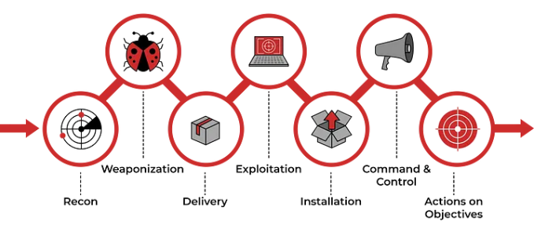

Cyber Security Fundamentals
Welcome to the Cyber Security Fundamentals section of HisHackMaterials. Here, we dive deep into the core concepts that form the foundation of cybersecurity. This section is designed to equip you with the knowledge and understanding needed to navigate the complex world of cyber threats and protection mechanisms.
Networking Fundamentals
Delve into the essentials of networking to build a solid foundation for cybersecurity expertise.
OSI/TCP Model
Explore the layers of the OSI and TCP/IP models and their importance in networking.

Google Dorking
Master Google Dorking to enhance your research and uncover information that isn't readily apparent on the web.
Cyber Kill Chain
Understand the steps of a cyber attack and learn how to protect against them using the Cyber Kill Chain framework.
